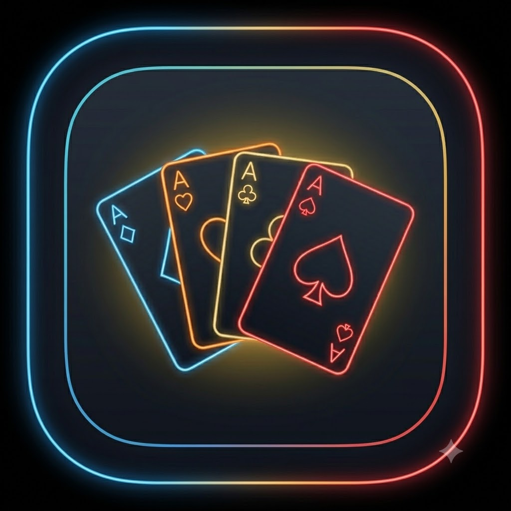
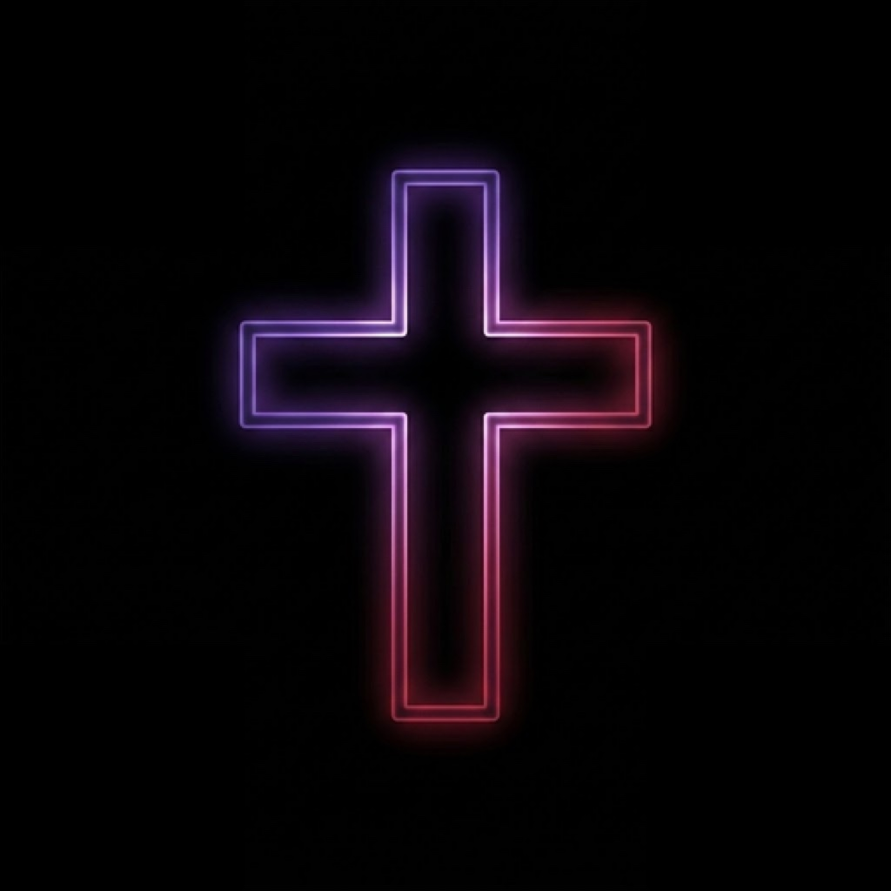
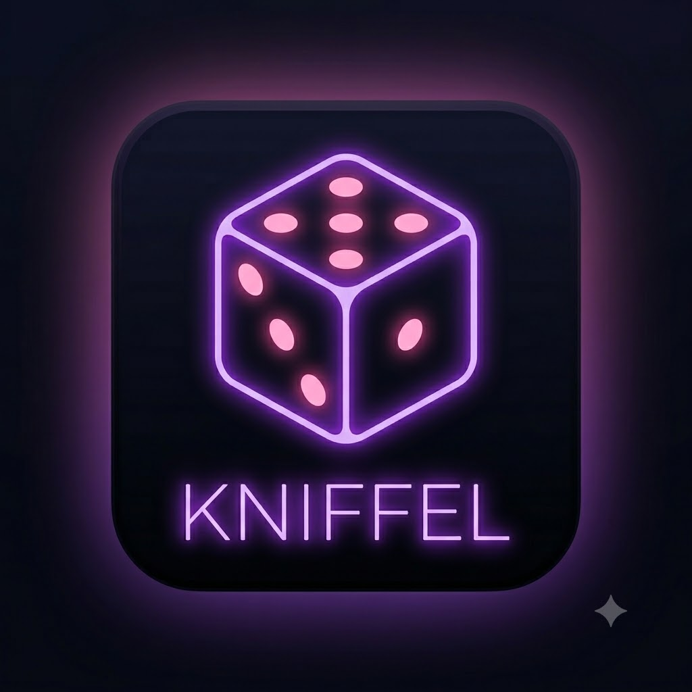
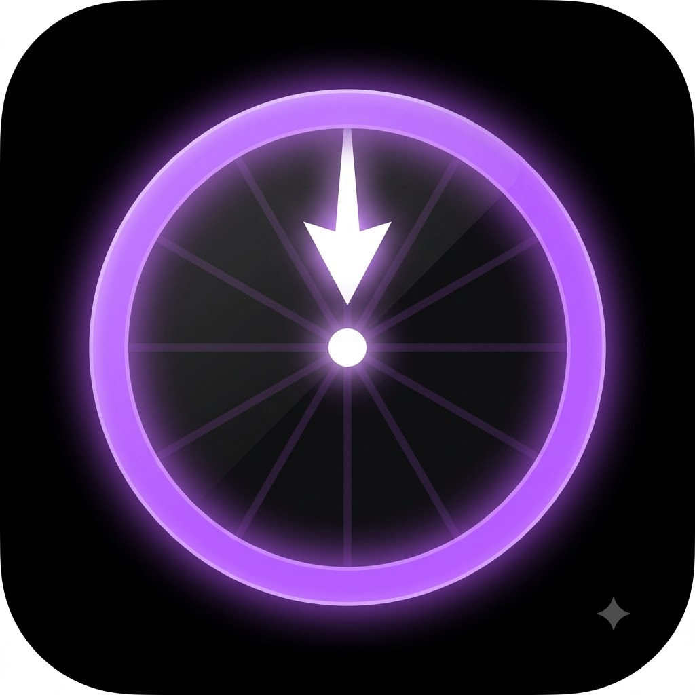
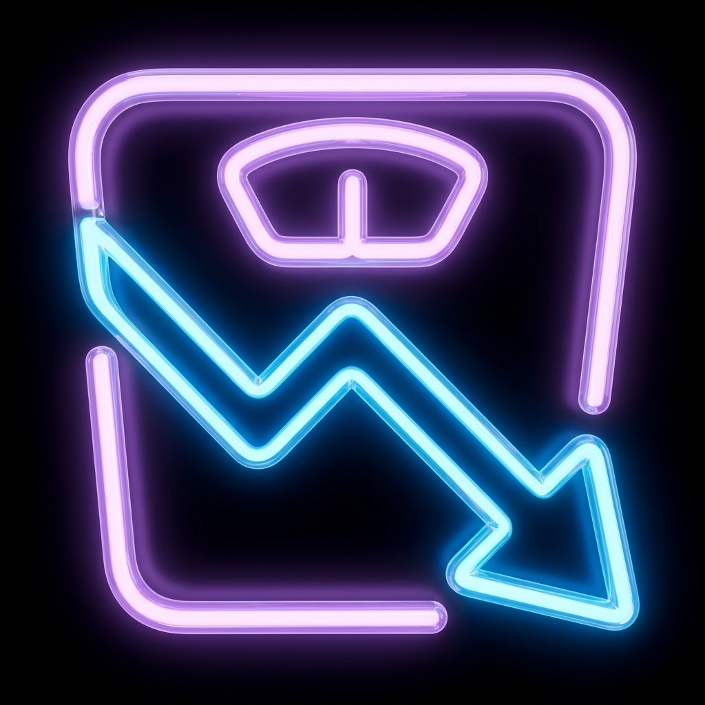

Großer Preis
Das ultimative Jungscharspiel, jetzt einfach konfigurierbar!

Binokel
Eine Zählapp für das legendäre Spiel aus dem Schwabenland

Training
Intervall & Trainings App für die Sommerfigur

Stille Zeit
Nimm dir Zeit für Begegnung mit Jesus im Gebet und im Bibellesen

Top 10
Notationshilfe für das Spiel

Kniffel
Entweder mit digitalen Würfeln oder als Schreibblock

Glücksrad
Für zufällige Entscheidungen

Auf dein Wort
Für deepen täglichen Input

Gewichtstracker
Tracke dein Gewicht privat mit deinem Zugang

Morgen News